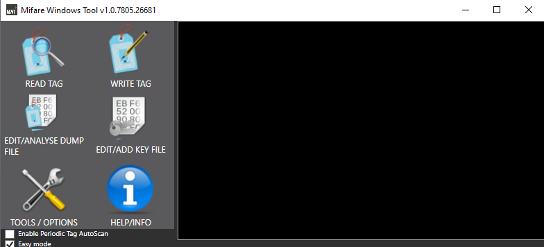
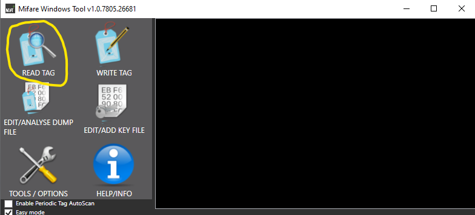
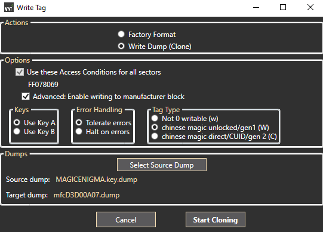

Skylander duping
Hello there. I will be teaching you how to dupe Skylanders. if you wondering what makes a Skylander. All a Skylander is an NFC(Near Field Communication) chip. So what that means is all you have to do is get data from a Skylanders NFC chip. But luckily a lot of people have already Gotten the data from Skylanders NFC chip. So what that means then you don't have to get that data from an NFC chip from a Skylander. So what that means for you just need to have the proper equipment.
Here's a list of the equipment:
- NFC card or chip. That has these properties Blocks 0 Writable, 1 KB of Storage, 13.56Mhz
- Smart IC Card Reader
- Mifare-Windows-Tool its Software
-
Windows computer
-
Dump of Skylanders
-
Skylander Portal(To see if your cloning work)
-
Open up the program MWT(Mifare-Windows-Tool) and make sure your smart card reader is plugged in.
-
Put on a NFC card or chip onto the smart card reader.
-
Now click on read tag. After clicking on it will ask you would you like to decrypt it click Start decoding and read the tag.
-
now the card you have on the smart card reader is decrypted click on the write tag And make sure you follow the picture below to see what you need to select. by the way, the Source dump is to select what Skylander you want to clone so may be different from my.
-
now just click on start cloning. After it finishes you're finished making a Skylander clone. you can test this by opening up a Skylanders game and putting it on Portal of Power.

What the app looks like

Trying to help the user to find their way to the read tag button

Properties you need to select to make the card write properly
This article was to help people to make Skylanders. due to people not selling them in stores anymore. Now you have to buy them off people or trade with people and sometimes that's not an option. by the way, this is illegal as long you don't sell them. so I hope this article helped you make Skylanders.